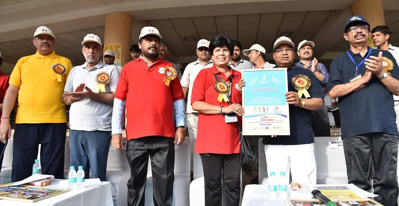
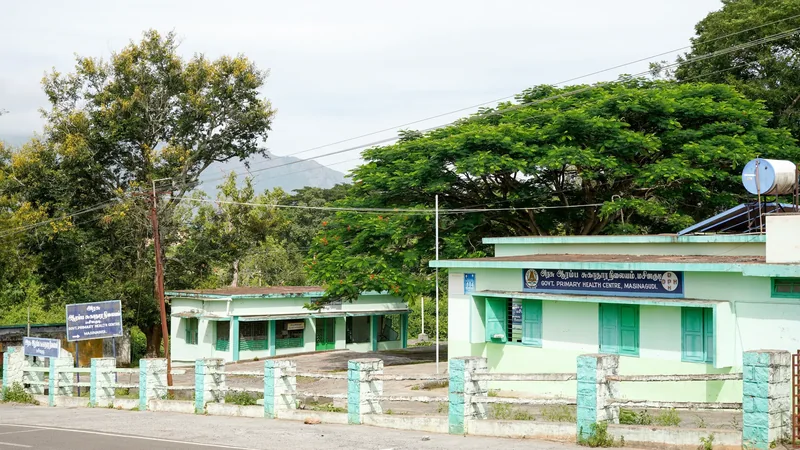
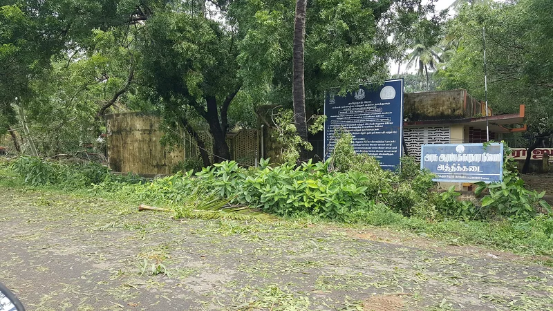

Check it
Where every word of this came from.
This site asks you to change what you believe about a law, on the strength of a page written by a school student. That is a lot to ask. So here is everything it stands on, with the section numbers and the addresses, so you can go and disagree with it if it is wrong.
The provision itself, in the English of the Act
64A. Immunity from prosecution to addicts volunteering for treatment.
Any addict, who is charged with an offence punishable under section 27 or with offences involving small quantity of narcotic drugs or psychotropic substances, who voluntarily seeks to undergo medical treatment for de-addiction from a hospital or an institution maintained or recognised by the Government or a local authority and undergoes such treatment shall not be liable to prosecution under section 27 or under any other section for offences involving small quantity of narcotic drugs or psychotropic substances: Provided that the said immunity from prosecution may be withdrawn if the addict does not undergo the complete treatment for de-addiction.
The ledger
Every claim, and where to check it.
The law
-
Bare Act text, Section 64A, Narcotic Drugs and Psychotropic Substances Act, 1985
indiankanoon.org -
Section 2, Juvenile Justice (Care and Protection of Children) Act, 2015
indiankanoon.org -
Section 77, Juvenile Justice (Care and Protection of Children) Act, 2015
indiankanoon.org -
Section 12, Legal Services Authorities Act, 1987
indiankanoon.org
The numbers
-
National Legal Services Authority
nalsa.gov.in -
Emergency Response Support System (ERSS), Ministry of Home Affairs
mha.gov.in -
Emergency Response Service, National Health Mission
nhm.gov.in -
Ministry of Social Justice and Empowerment, under Nasha Mukt Bharat Abhiyaan
nmba.dosje.gov.in -
National Tele Mental Health Programme, Ministry of Health and Family Welfare
telemanas.mohfw.gov.in -
Ministry of Women and Child Development
childlineindia.org
The counts and the campaigns
-
PIB Release 2288262, Ministry of Social Justice and Empowerment, 23 July 2026 — a written reply in Parliament
pib.gov.in -
PIB Release 2010097, Ministry of Social Justice and Empowerment, February 2024
pib.gov.in -
Ministry of Social Justice and Empowerment, Nasha Mukt Bharat Abhiyaan
socialjustice.gov.in
The safety page
-
World Health Organization, opioid overdose fact sheet
who.int -
Shatterproof, on scare tactics in drug prevention
shatterproof.org
Real photographs
Where the five photographs came from
-
The Narcotic Drugs and Psychotropic Substances Act, 1985, page one, as passed.
Parliament of India, via the Internet Archive · Public domain
commons.wikimedia.org -

The 16th Run against Drug Abuse, Ministry of Social Justice and Empowerment, New Delhi, 26 June 2018.
Ministry of Social Justice and Empowerment · GODL-India
commons.wikimedia.org -
The mass run against drug abuse at India Gate, New Delhi, 26 June 2011.
Press Information Bureau, Government of India · GODL-India
commons.wikimedia.org -

The Government Primary Health Centre at Masinagudi, the Nilgiris, Tamil Nadu.
Timothy A. Gonsalves · CC BY-SA 4.0
commons.wikimedia.org -

{kind=link}
{kind=link}
{kind=link}
{kind=link}
What this page cannot tell you
And here is what this site does not know
About the pictures: the five marked “Real photograph” are listed above, with who took them and the licence. Every other picture on this site was generated for it. Those captions say what is in the frame and never name a place, so none of them can be mistaken for evidence.
Whether a particular counsellor, at a particular centre, on a particular day, would tell your parents. It varies by your age, your state and the service, and anyone who gives you a single answer on a website is guessing.
What 14446 does with the number you call from, or whether it really answers at three in the morning. Neither is published anywhere this site could read, so neither is claimed here. The round-the-clock line above is the Ministry describing it, marked as a claim.
Whether 14446 will answer you in Tamil. Tele-MANAS on 14416 publishes its language list and Tamil is on it; 14446 does not publish one.
Whether the February 2024 counts are still current. Check the ministry page before you quote them at anybody.
Whether the toll-free page for 14446 says what this site says it says. The ministry host returned an expired TLS certificate, so it was never read directly — the number is corroborated from the ministry’s own account. Dial it before you rely on it.
Whether 1098 is the right number for your situation. It is the weakest citation on this page and it is flagged rather than dressed up: it is here only for the case it is for, and never as the answer to a medical emergency.
Whether treatment works, and for how many. The Ministry publishes how many centres it funds, how many people the campaign has reached and how many volunteers signed up. It publishes no completion rate, no recovery rate and no discharge outcome, and no other government page this site could find publishes one either. So there is no such number anywhere on this site.
Which number is current. The Ministry promotes 14446. The National Institute of Social Defence, also a Government of India body, still lists the helpline as 1800-11-0031. This site publishes 14446 because that is the one being promoted, and tells you about the other because you should not have to find it out on your own.
If something on this site is wrong, it should be possible to prove it wrong from this page, without asking anybody. That is the point of the page. It was built by a school student and it will have mistakes in it, and the honest response to that is to make them findable rather than to sound more certain.